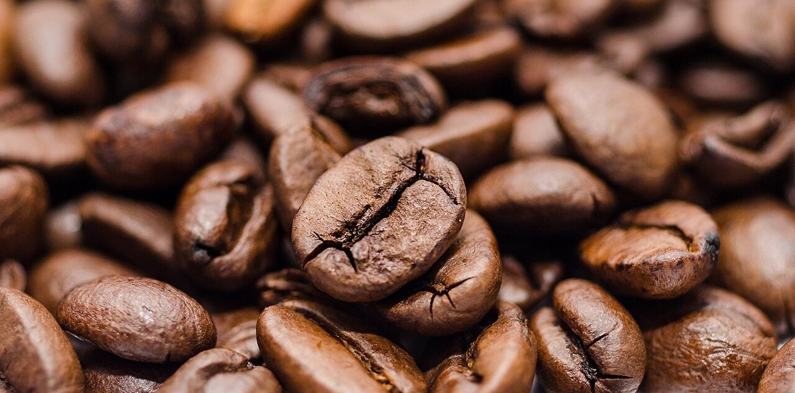

部位 2 / ハンドル
店のこと
ハンドルは「押して進む人の手がふれる部分」。このページでは、お店について確認できていることだけを握ります。
図の題材「ベビーカー」は、制作側の連想で選んだもので、お店の理念・由来とは無関係です。お店がベビーカーに関わるサービスを行っているという意味でもありません。
確認できていること
- 店名は「黒田ぱん」、業種はパン屋
- 所在地は鹿児島県霧島市国分中央５丁目４−７(〒899-4332)
- 電話番号はなし。連絡はInstagramから
- 営業時間・定休日・メニュー・価格・ご予約・駐車場は準備中

写真について
写真はイメージです
実際のお店の様子や考え方は分かりません。このページの写真はコーヒー豆のフリー素材で、お店で扱っているものを示すものではありません。お店の紹介は、Instagramの内容をもとに、確認できたことから順に足していきます。
